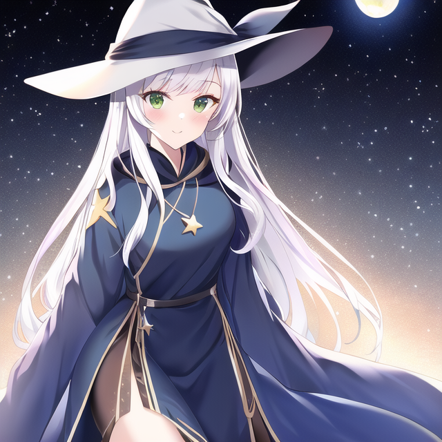
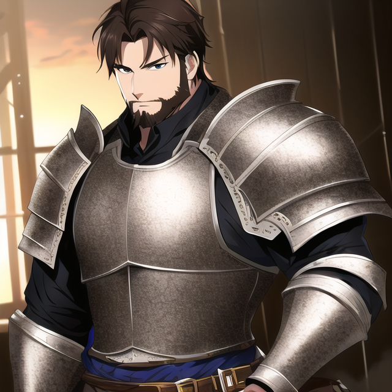
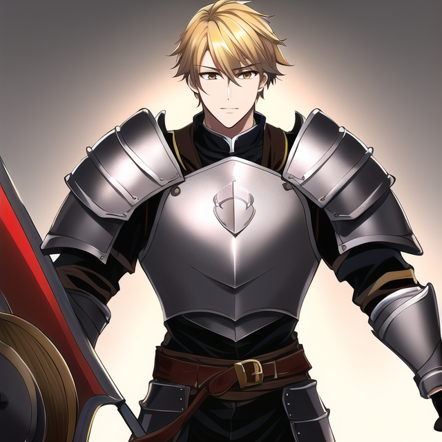

異世界転生！ポップコーンの加護で魔王を討伐する若き勇者の奇跡の物語
あらすじ
９８歳の孤独な老人・天野喜一郎は、ある夜自宅で映画を楽しみながらポップコーンを食べていた。しかし、突如ポップコーンが詰まり、喜一郎は息絶えてしまう。しかし彼の物語はここから始まりだった。
喜一郎は、若者として異世界・アルテリアに転生する。彼はこの世界で魔法や剣術を学ぶことができ、未来を切り開く冒険が待っていた。転生して得た特別な力「ポップコーンの加護」は、彼がピンチの時に助けとなる。
アルテリアでは邪悪な魔王が世界を支配しようと企んでおり、喜一郎はその野望を阻止すべく立ち上がる。彼は様々な仲間と出会い、冒険を繰り広げる。元の世界で得られなかった友情や愛情を満喫し、彼はこの世界で新たな人生を歩み始める。
しかし、喜一郎の持つ「ポップコーンの加護」の力が魔王の目に留まり、彼の命を狙われることになる。喜一郎は、自分が転生した理由や魔王の真の目的を知るうちに、運命の戦いに巻き込まれていく。
最後の戦いで魔王と対峙する喜一郎。彼は仲間とともに苦戦を強いられるが、「ポップコーンの加護」の力を最大限に発揮して、魔王を倒すことに成功する。喜一郎はアルテリアでの冒険を終え、平和な世界を取り戻す。彼は新たな人生を楽しみながら、かつての自分には考えられないような冒険を繰り広げるのだった。
ポップコーンの加護とは
「ポップコーンの加護」は、喜一郎が異世界アルテリアで転生した際に得た特別な力で、以下の特徴を持っています。
-
爆発的な力: 喜一郎は、ポップコーンが瞬時に膨張・爆発する性質を利用し、敵に対して強烈な一撃を与えることができます。この力は、彼の剣術や魔法と相まって、より強力な攻撃手段となります。
-
防御の盾: 喜一郎は、ポップコーンの軽さと弾力性を利用して、敵の攻撃を跳ね返す防御の盾を作り出すことができます。この盾は、彼の身を守るだけでなく、仲間にも保護を提供します。
-
瞬間的な回復: ポップコーンの栄養分を利用し、喜一郎は短時間で自分や仲間の体力を回復させることができます。この回復力は、長期的な冒険や戦闘で疲労が蓄積した際に、喜一郎たちの助けとなります。
-
驚くべきスピード: ポップコーンが急速に熱を受けて膨張する性質を利用して、喜一郎は瞬時に高速移動や瞬間移動を行うことができます。これにより、彼は敵を翻弄し、戦術的な優位を築くことができます。
「ポップコーンの加護」は、喜一郎にこれらの力を与え、彼の冒険をサポートします。彼は、この力を駆使してアルテリアでの数々の困難を乗り越え、最終的に邪悪な魔王との戦いに勝利することができます。
登場人物
| 名前/顔 |
説明 |
主人公：天野 喜一郎

|
19歳
男性
元９８歳の孤独な老人
|
リーナ・シルバーウィンド

|
20歳
女性
リーナは優れた魔法使いで、喜一郎が異世界アルテリアで最初に出会う仲間です。彼女は喜一郎のポップコーンの加護に興味を持ち、彼の冒険に同行することになります。
|
ガルド・アイアンフィスト

|
32歳
男性
ガルドは熟練した戦士で、喜一郎たちのパーティに力と経験をもたらします。彼は仲間を守ることに命をかけており、喜一郎に対しても兄貴分のような存在となります。
|
ユーリ・スウィフトソング

|
25歳
女性
ユーリは軽快な動きで戦う盗賊で、喜一郎たちのパーティに機敏さとスピードを提供します。また、彼女は異世界アルテリアの歴史や伝説に詳しく、物語の進行に役立つ情報を提供します。
|
エリオス・ライトブリンガー

|
28歳
男性
エリオスは信仰心の強い聖騎士で、喜一郎たちのパーティに治癒魔法と強力な守護の力をもたらします。彼は喜一郎のリーダーシップを支持し、彼が魔王を倒すための助力を惜しまない。
|
本編
【第一話：転生とポップコーンの奇跡】
ある晩、98歳の喜一郎は、長い人生の終わりに迫る心細さを紛らわすため、孤独な部屋でポップコーンをかじりながら映画に耽溺していた。しかしその最中、突如息が詰まり、彼の人生は無念のうちに幕を閉じた。
喜一郎は意識が朦朧とする中、どこか異次元のような草原に立っていることに気づいた。彼の視界が徐々にクリアになり、目の前には広がる緑の大地と、青く澄んだ空が広がっていた。
彼は驚くべきことに、若返り、19歳の容姿を手に入れていたことに気づく。自分の体が若々しく、懐かしい感覚が蘇ることに戸惑いながらも、喜一郎は自分の姿を見つめる。
喜一郎: 「これは…どういうことだ？ どうしてこんなに若くなっているんだ？」
喜一郎は驚きと戸惑いに満ちた声でつぶやく。彼は何度も自分の顔や手を見つめ、自分が本当に若返っていることを確かめる。
その時、突然、彼の目の前に美しい少女が現れる。彼女は銀色の長い髪をなびかせ、純白のローブをまとっていた。彼女は喜一郎に微笑みかけ、優しく話しかける。
少女: 「あなたがたどり着いたのは、異世界アルテリアという地です。あなたはこの世界で新たな人生を歩むことになります。」
喜一郎: 「異世界…アルテリア？ どうして僕がこんなところに？」
少女: 「あなたが亡くなった瞬間、この世界に転生しました。そして、あなたは特別な力を授かることになります。それは、あなたが最期に食べたポップコーンに由来する、『ポップコーンの加護』という力です。」
喜一郎は、驚きと混乱の中で、新たな人生と特別な力を受け入れようとする。彼はこの異世界での生活が始まることを悟り、少女に感謝の言葉を述べる。
喜一郎: 「ありがとう、この力を大切に使います。そして、この新しい人生を生き抜くことを誓います。」
少女は再び微笑み、喜一郎の決意を見届ける。そして彼女は、喜一郎の前から消えていく。喜一郎は、彼女の言葉を胸に刻み、自分の新しい人生に自信を持って取り組むことを決意する。彼は目の前に広がる未知の世界を見つめ、自分の冒険がこれから始まることを実感する。
喜一郎はまず、この異世界アルテリアで生き抜くために必要な知識や技術を身に付けることに専念する。彼は地元の村人たちと触れ合い、彼らから異世界の文化や習慣を学ぶ。また、自分の持つ「ポップコーンの加護」の力をどのように活かせるかを模索し、その力を磨いていく。
やがて、喜一郎は異世界アルテリアでの生活に慣れ、彼の冒険が本格的に始まる。彼は仲間たちと出会い、共に危険なダンジョンを探検し、強大な魔物と戦うことになる。喜一郎はその中で、自分の持つ「ポップコーンの加護」の力を使いこなし、次々と困難な試練を乗り越えていく。
喜一郎の仲間たちも、彼が持つ特別な力に惹かれ、彼と共に冒険を続けることを決意する。彼らは喜一郎のリーダーシップと「ポップコーンの加護」の力を信じ、彼と共にアルテリアの世界を駆け巡る。
喜一郎と仲間たちの冒険は、やがて魔王を倒すための壮大な物語へと発展していく。彼らは困難を乗り越え、仲間との絆を深める中で、運命に立ち向かい続ける。そして、喜一郎はこの異世界での新しい人生を生き抜くことを誓い、彼の物語は永遠に語り継がれることとなる。
彼が辿り着いたのは、異世界アルテリアという地である。
喜一郎は、未知の森をさまよいながら、リーナ・シルバーウィンドという名の美しい魔法使いと出会う。彼女は喜一郎の持つ「ポップコーンの加護」という特異な能力に興味を持ち、彼の物語に加わることを決意する。
喜一郎とリーナは、魔王によって荒廃した異世界を救う旅を始める。その途中で、彼らはガルド・アイアンフィストという熟練した戦士、ユーリ・スウィフトソングという機敏な盗賊、そしてエリオス・ライトブリンガーという信仰深い聖騎士と出会い、共に戦う仲間となる。
喜一郎は、異世界での過酷な旅路の中で、持つポップコーンの加護を巧みに使いこなし、数々の困難に立ち向かう。この異世界での生活を通じて、彼はかつての孤独な日々を忘れるほどの絆を仲間たちと築いていく。
喜一郎たちの旅は、ついに魔王の居城へとたどり着く。彼らは試練と戦いを乗り越え、最後の戦いに挑む。喜一郎は、仲間たちと共に団結し、ついに魔王を討伐することに成功する。
魔王を倒した喜一郎は、異世界アルテリアで新たな人生を歩むことを決意し、その地での冒険を続けることを選ぶ。喜一郎は、かつての孤独な人生とは違い、仲間たちとともに未来へと歩み始める。
アルテリアの土地では、喜一郎と仲間たちは様々なクエストに挑戦し、困っている人々を助けることで評判を上げていく。喜一郎は、自分の持つポップコーンの加護を活かして、様々な問題を解決し、人々から尊敬される存在へと成長していく。
喜一郎たちの活躍は、やがてアルテリアの王にまで届く。彼らは王から表彰され、王国の騎士団に招かれる。喜一郎は、これまでの冒険で築いた絆を大切にし、仲間たちと共に王国のために尽力することを決意する。
しかし、アルテリアにはまだ多くの困難が残っていた。喜一郎たちは、魔物たちが跋扈する地域の平和を取り戻すために、さらなる冒険に挑む。彼らは、その道のりで様々な試練に立ち向かい、困難を乗り越えることで、絆をさらに深めていく。
時が経ち、喜一郎はアルテリアでの生活にすっかり馴染んでいた。彼は、かつての孤独な日々を思い出すこともなく、仲間たちと共に幸せな日々を過ごす。喜一郎は、この異世界での新しい人生を心から愛し、彼の運命が変わることはなかった。
そして、喜一郎は次第にアルテリアの歴史に名を刻む伝説の英雄となり、その名は後世に語り継がれることになる。彼の冒険は、アルテリアの人々に希望を与え、未来の世代に影響を与え続けることになる。喜一郎は、自分の持つ「ポップコーンの加護」と共に、永遠に語り継がれる物語の一部となるのであった。